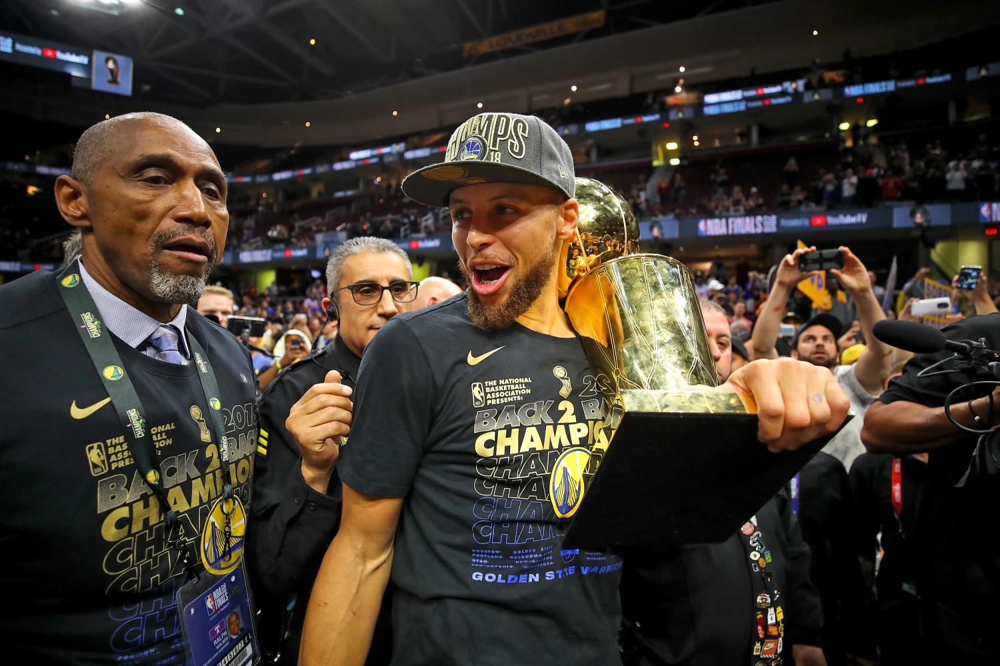

Stephen Curry

Stephen Curry played from 2009 to the present. In that time period, he amassed Career Achievements:
Career Achievements:
- NBA Championships: 4 (2015, 2017, 2018, 2022)
- NBA Most Valuable Player (MVP) Awards: 2 (2015, 2016)
- NBA All-Star Appearances: 9 (2014–2019, 2021–2023)
- NBA All-Star Game MVP: 1 (2022)
- NBA All-Defensive Second Team: 0
- NBA Finals MVP: 1 (2022)
All-Time Rankings:
- Points: 21,000+ – 24.2 PPG (as of 2025)
- Assists: 6,500+ – 6.5 APG (as of 2025)
- Rebounds: 4,200+ – 5.3 RPG (as of 2025)
- Three-Point Field Goals Made: 3,000+ (1st All-Time)
- Field Goal Percentage: 47.5%
- Minutes Played: 40,000+ (as of 2025)
- Free Throw Percentage: 90.7%
Single-Game Records:
- Most Points in a Game: 62 (career high)
- Most Assists in a Game: 16 (career high)
- Most Three-Pointers in a Game: 13 (career high)
Notable Career Feats:
- Revolutionized the game with his three-point shooting
- Only player to hit 400+ 3-pointers in a single season
- Led the Warriors to 5 consecutive NBA Finals (2015–2019)
Hall of Fame Induction:
- Stephen Curry is expected to be inducted into the Naismith Memorial Basketball Hall of Fame once eligible